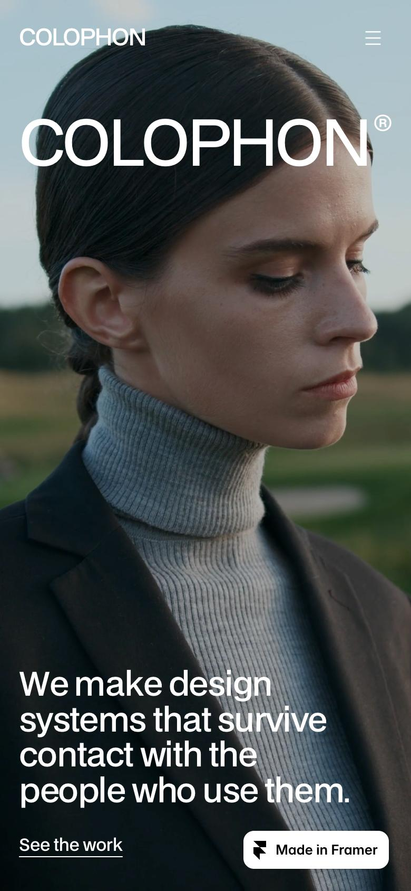

01Empfehlung
Colophon
Studio · Framer-Vorlage
- Ein sichtbares Raster: links schmale Spalte mit Nummer und Label (01 Intro, 02 Arbeiten …), rechts der Inhalt. Eine Grotesk (BDO Grotesk), Hierarchie nur über Größe.
- Leistungen als bildschirmhohe Bänder: Versalname über abgedunkeltem Foto, die sich beim Scrollen stapeln. Das ist das Handy-Wow.
- Zahlenzeile, ein großes Zitat, dunkler Fuß mit Aufforderung und vier Spalten. Trägt bis ganz unten.
- Kein Ablauf, kein FAQ, keine Öffnungszeiten, keine Signalfarbe. Fotos sind farbige Kampagnenbilder.
Ganzes9
Abdeckung7
Handy9
Schwache Fotos8
Branchen-Mix9
Summe42

Erste 5 SekundenVollbild-Foto, Wortmarke über die ganze Breite, ein Satz unten links. Bei uns: Firmenname als Wortmarke, Foto in S/W, darunter Anruf in Signalfarbe.